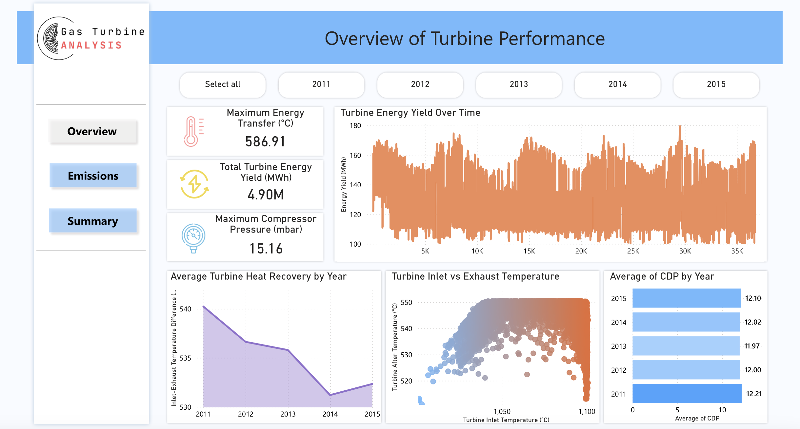
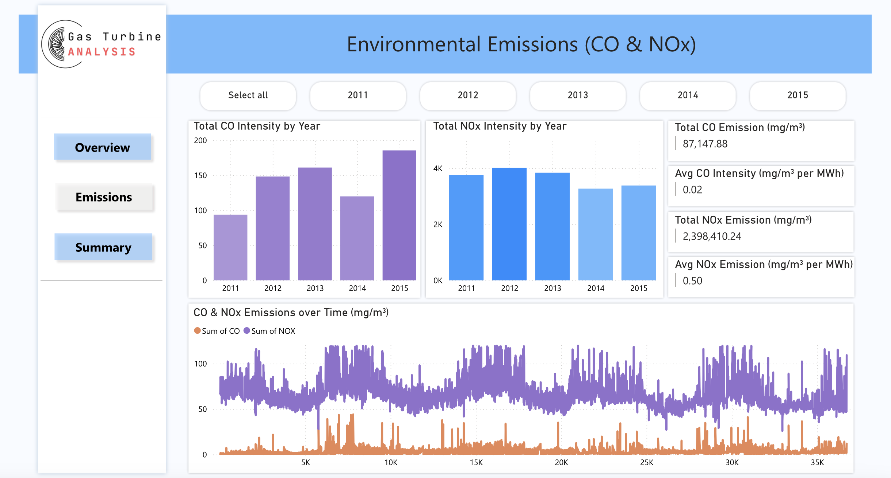
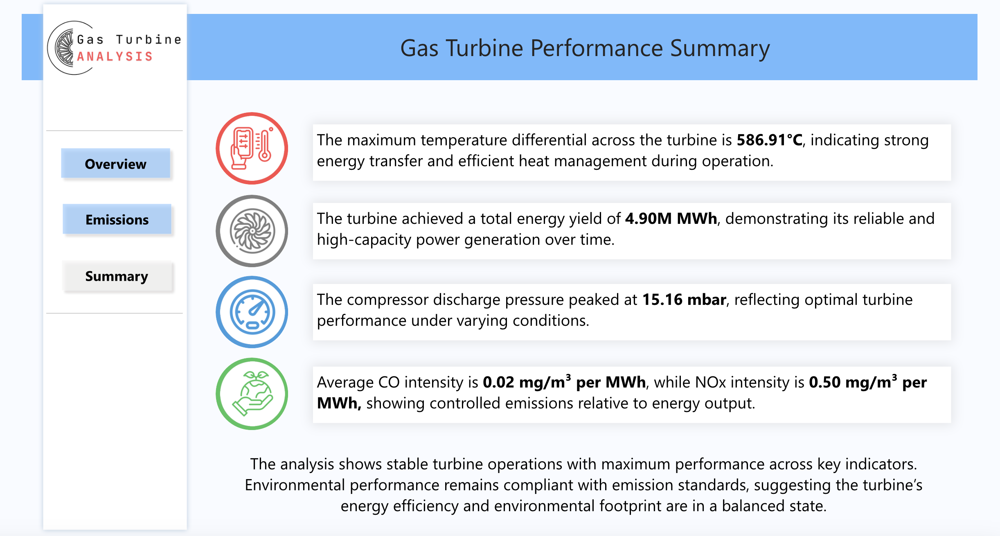

Data Analysis on Gas Turbines
Overview
This dashboard offers an in-depth analysis of gas turbine performance and efficiency, highlighting crucial insights into operational trends and emissions. By monitoring key metrics, it enhances understanding of turbine efficiency and supports proactive maintenance strategies for optimal performance.
Dataset Details
The analysis utilizes a dataset with the following columns:
- Ambient Temperature (°C) - AT
- Ambient Pressure (mbar) - AP
- Ambient Humidity (%) - AH
- Air Filter Differential Pressure (mbar) - AFDP
- Gas Turbine Exhaust Pressure (mbar) - GTEP
- Turbine Inlet Temperature (°C) - TIT
- Turbine After Temperature (°C) - TAT
- Turbine Energy Yield (MWh) - TEY
- Carbon Monoxide (mg/m³) - CO
- Nitrogen Oxides (mg/m³) - NOx

×
Overview Page
- Maximum Energy Transfer (°C): Indicates the highest energy transfer during turbine operation by measuring the peak difference between inlet and after temperatures.
- Total Energy Yield (MWh): Represents the cumulative energy generated by the turbine over the monitored period, reflecting overall production efficiency.
- Maximum Compressor Discharge Pressure (mbar): Measures the peak pressure released from the compressor, essential for efficient combustion and energy conversion.
- Total Energy Yield Over Time: A line chart showcasing energy production trends.
- Temperature Differences Over Time: An area chart displaying the variance between inlet and exhaust temperatures annually.
- Temperature Trend Analysis: A scatter plot evaluating trends in inlet and exhaust temperatures.
- Average Compressor Discharge Pressure: A bar graph illustrating yearly averages.

×
Emissions Page
- Yearly CO Intensity: Column graph showing the annual sum of CO emissions per unit energy.
- Yearly NOx Intensity: Column graph depicting the annual sum of NOx emissions per unit energy.
- Emission Trends: Line charts illustrating the progression of CO and NOx emissions over time.
- Key Metrics (2011-2015): Insights into overall CO and NOx emissions within the specified years.

×
Summary Page
The dashboard concludes with key insights derived from the analyzed data, summarizing the performance and emission trends of the gas turbines.